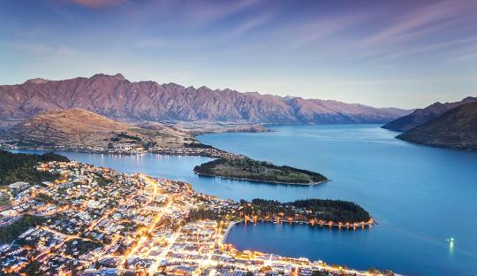
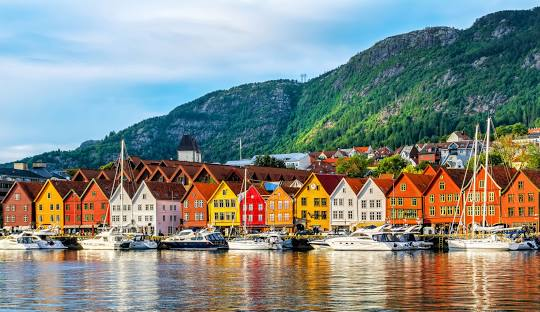
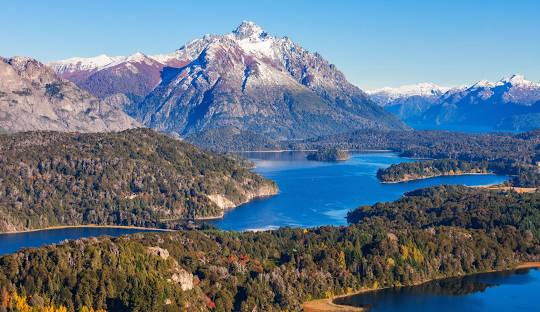
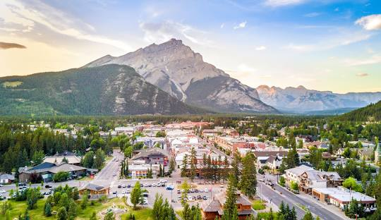
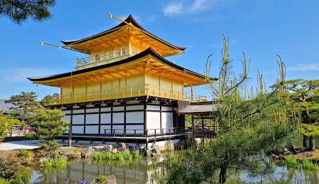

Queenstown, Otago
New Zealand
| Population | Latitude | Longitude | 15,800 | -45.0312 | 168.6626 |
|---|
Queenstown is known as the adventure capital of the world, offering endless exciting activities such as bungee jumping, skiing and high-speed boating. Surrounded by the stunning Southern Alps and the crystal-clear Lake Wakatipu, its landscape is of a spectacular beauty that will enthrall any visitor.
Bergen, Vestland
Norway

| Population | Latitude | Longitude | 287,000 | 60.3913 | 5.3221 |
|---|
Bergen, with its charming harbour and colourful wooden houses, is the gateway to Norway's famous fjords. The city is surrounded by mountains, giving it a cosy and picturesque atmosphere, perfect for those looking for an encounter with nature in a historical and cultural setting.
Bariloche, Río Negro
Argentina

| Population | Latitude | Longitude | 145,000 | -41.1335 | -71.3103 |
|---|
Known for its alpine landscapes and Swiss-style architecture, San Carlos de Bariloche is an ideal destination for nature lovers. Located in the Nahuel Huapi National Park, it offers unparalleled opportunities for skiing, mountain hiking, and enjoying crystal-clear lakes.
Banff, Alberta
Canada
| Population | Latitude | Longitude | 7,800 | 51.1784 | -115.5708 |
|---|
Located in the heart of the Canadian Rockies, Banff is a natural paradise with majestic mountains, turquoise-blue glacial lakes, and abundant wildlife. It's the perfect place to explore the outdoors, with options for hiking, skiing, and relaxing in hot springs.
Kyoto, Kyoto Prefecture
Japan

| Population | Latitude | Longitude | 1.46 million | 35.0116 | 135.7681 |
|---|
Kyoto, the former capital of Japan, is a city rich in history and culture. Its Buddhist temples, Zen gardens, and colorful Shinto shrines are a testament to its glorious past. In spring, cherry blossoms transform the city into an ethereal landscape, attracting visitors from around the world.